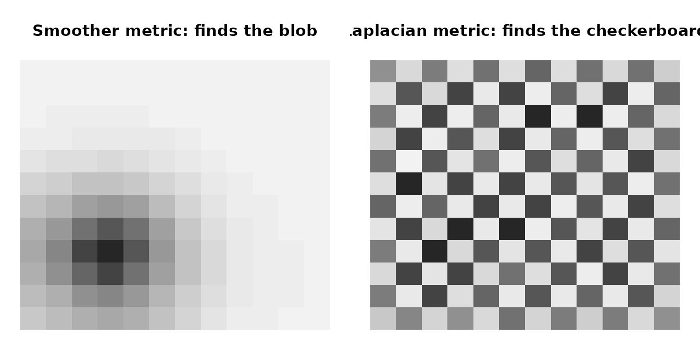

This vignette collects practical recipes for row and column metrics,
plus notes on SPD remedies and the experimental gpca_mle()
learner.
Why metrics
Metrics encode weighting and correlation. The row metric
M changes how observations are compared. The column metric
A changes how variables are compared. Both must be
symmetric positive semi-definite (PSD) for GPCA –
singular metrics are accepted (e.g. a rank-deficient graph Laplacian),
and constraints_remedy can repair mildly invalid input. In
return, you can bake known structure – temporal correlation, spatial
proximity, group membership, heteroscedastic noise – straight into the
decomposition.
Structure alone is not enough, though: you also have to get the direction right, and supplying a matrix versus its inverse produces opposite results. The next section is about that, and it is worth reading before the recipes.
Heteroscedastic diagonals
The simplest non-trivial metric is a diagonal that down-weights noisy rows or columns:
set.seed(42)
n <- 60; p <- 20
X <- matrix(rnorm(n * p), n, p)
col_noise_sd <- runif(p, 0.5, 2)
A <- Diagonal(x = 1 / col_noise_sd^2)
row_noise_sd <- runif(n, 0.7, 1.3)
M <- Diagonal(x = 1 / row_noise_sd^2)
fit <- genpca(X, M = M, A = A, ncomp = 3,
preproc = multivarious::center())
fit$sdev
#> [1] 14.69818 11.24551 10.96887
Inverse-variance weights on columns (top) and rows (bottom). Noisier dimensions get smaller weights.
Which way does a metric point?
Before the recipes, the single most important thing to get right —
and the easiest to get backwards. A metric amplifies its own
dominant eigendirections. Loadings are
components(fit)
ov,
so whichever patterns
assigns large eigenvalues to are the patterns that come out of the
decomposition.
For a spatial or temporal structure there are two natural matrices, and they point in opposite directions:
| You supply | measures | Large eigenvalues on | Components come out |
|---|---|---|---|
| A smoother: kernel , adjacency , , heat kernel | agreement between neighbours | smooth patterns | smoother |
| A precision: Laplacian , , , inverse AR(1) | disagreement across edges (Dirichlet energy ) | rough patterns | rougher |
Both are legitimate, because they encode different beliefs about where the noise lives. Recall that :
- Smoother as metric has its variance in the rough directions “the noise is high-frequency speckle; the signal is smooth.” This is denoising, and it is what you want when you are after spatially coherent maps.
- Precision as metric has its variance in the smooth directions “a smooth field — drift, a scanner gradient, a global trend — is the nuisance.” Whitening it away lets fine-scale structure surface. This is ordinary generalized least squares against correlated noise.
So the question is never “adjacency or Laplacian?” in the abstract. It is: is the smooth thing my signal, or my nuisance?

The same graph, two metrics. Left: a smoother concentrates PC1 on the smooth blob. Right: the Laplacian whitens the smooth field away, so PC1 locks onto the fine-scale checkerboard that was buried underneath it.
Two practical notes on the graph matrices themselves. A raw adjacency
is indefinite (its eigenvalues sum to zero), so it is
not a valid metric on its own — shift it, as in
with
small enough to keep it PSD. A raw Laplacian
is PSD but singular:
,
so the spatially constant pattern has zero length under it.
genpca() accepts that (the whitening uses a
pseudo-inverse), but adding a small ridge,
,
is usually what you want.
Finally, the strength matters and is not cosmetic. In the example above the first component only switched from the smooth blob to the checkerboard once passed roughly 50; at the blob still dominated. Sweep it and look at your loadings.
Recipes
Each recipe below is labelled with the direction it produces. All
three are written here as precision matrices, i.e. the
noise-whitening stance; drop the solve() to get the
smoothing version instead.
AR(1) row metric (whitens temporal autocorrelation)
Standard GLS treatment of serially correlated observations, as in fMRI prewhitening: it removes temporal autocorrelation rather than imposing temporal smoothness.
Graph Laplacian (emphasises contrast across edges)
W <- bandSparse(30, k = c(-1, 0, 1),
diagonals = list(rep(0.2, 29),
rep(1, 30),
rep(0.2, 29)))
D <- Diagonal(x = rowSums(W))
A_lap <- (D - W) + 1e-2 * Diagonal(nrow(W))
# A_smooth <- solve(A_lap) # smoother: spatially coherent loadings
Three structured metrics, all shown in the precision (noise-whitening) orientation. Off-diagonal banding is what couples nearby rows or variables – it tells GPCA ‘treat these dimensions as related, not independent’.
A note on sfpca()
sfpca() takes the opposite input for the same
intent. There the structure enters as a constraint,
,
which charges rough
against a fixed budget — so you pass the roughness operator (Laplacian,
second differences) directly via alpha_v, and larger
alpha_v means smoother. Metric form and
constraint form are inverse to one another: the same Laplacian smooths
in sfpca() and roughens in genpca().
Learning metrics with gpca_mle()
When you suspect structured noise but lack good priors,
gpca_mle() learns SPD metrics by alternating GPCA with
matrix-normal maximum likelihood:
set.seed(1)
n_m <- 40; p_m <- 10
X_mle <- matrix(rnorm(n_m * p_m), n_m, p_m)
fit_mle <- gpca_mle(X_mle, ncomp = 2, max_iter = 6,
lambda = 1e-3, scale_fix = "trace",
method = "eigen", verbose = FALSE)
range(diag(as.matrix(fit_mle$M)))
#> [1] 156827.4 249196.5
range(diag(as.matrix(fit_mle$A)))
#> [1] 2.583950 3.330251
Learned row metric M (left) and column metric A (right) on i.i.d. Gaussian data. With identity-noise input the learner stays close to identity, with mild row- and column-specific damping.
Keep lambda non-zero, start with a small
ncomp, and watch warnings – they signal a metric was
repaired during the iteration.
SPD remedies in practice
-
constraints_remedy = "ridge"(default) adds a diagonal jitter to keep metrics SPD. -
"clip"truncates tiny negative eigenvalues;"identity"falls back to identity if a metric misbehaves. - Scale metrics before use (e.g., divide by mean diagonal) to avoid ill-conditioning.
- After fitting, check
range(eigen(A)$values)on small problems to verify conditioning.
Where next
See vignette("structured-noise") for how to choose the
transfer function when several kinds of structure are present at once,
and vignette("gpca-scale") for backend choices, sparse
workflows, and covariance-only GPCA.